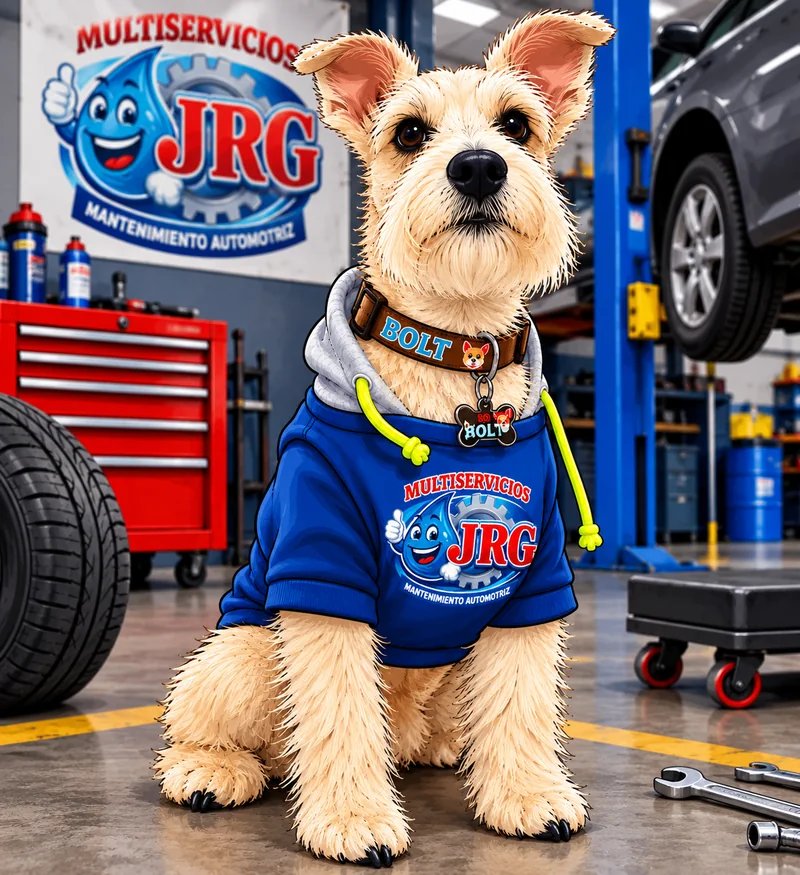
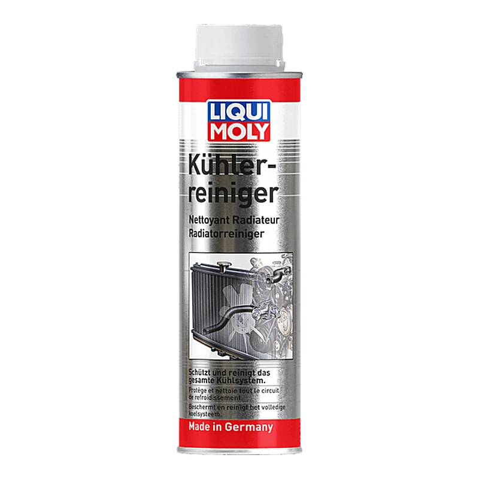

Aceite nuevo, motor tranquilo.
Cambio de aceite con máquina de succión, frenos, engrase y una tienda con todo para tu carro o moto. Cotiza en un minuto y recibe el precio en tu WhatsApp.
- Succión: el aceite viejo sale sin ensuciar tu motor
- Mano de obra gratis en el cambio completo (aceite y filtros)
- Guardamos cada cambio con tu placa
Cambio de aceite
con succión
con succión
Todo para tu carro y tu moto.
Más de 2.900 productos en inventario: aceites para carro y moto por marca, filtros, grasas, ambientadores, siliconas para brillo y mucho más, con precios.
1Cotiza en un minutoPor marca y modelo, o con tu placa.
2Máquina de succiónAceite viejo fuera, sin ensuciar el motor.
3Historial por placaConsulta tus cambios anteriores.
4Pide por WhatsAppTu cotización y tu pedido, directo.

Nuestros servicios
Mantenimiento preventivo para carros y motos, hecho con cuidado.
Por qué elegirnos
Ver másServicios especializados
Cambio de aceite con máquina de succión, frenos y engrase: servicios que van más allá de un cambio de aceite convencional.
Asesoría personalizada
Te ayudamos a elegir el lubricante y los filtros adecuados según tu vehículo, su motor y el uso que le das.
Productos de calidad
Trabajamos con marcas reconocidas y un inventario amplio para contribuir al buen funcionamiento de tu motor.
Atención y experiencia
Una atención cuidadosa, transparente y orientada a las necesidades de cada cliente.
Aceites para carro
Ver todosProductos para motos
Ver todosAmbientadores, siliconas y brillo
Ver todosCompra por categoría
Elige una categoría y pide por WhatsApp o pásate por el local.
Marcas que manejamos
Así es tu cambio con nosotros
- Cotizas en la páginaEliges tu vehículo y el aceite, o buscas tu placa si ya nos visitaste.
- Llegas y lo revisamosMiramos niveles, filtros y lo que tu vehículo necesite, sin sorpresas.
- Cambio con succiónSacamos el aceite viejo, ponemos el nuevo y guardamos tu historial.
Consejos para cuidar tu vehículo
Lo básico para que el motor dure más.
¿Cada cuánto cambiar el aceite?
Depende del tipo de aceite, del uso y de lo que indique el manual de tu vehículo. Si dudas, cotiza y te orientamos.
Mineral, semisintético o sintético
El sintético protege mejor y dura más; el mineral es más económico. Elegimos según tu motor y tu presupuesto.
Cambia el filtro con el aceite
Un filtro viejo contamina el aceite nuevo. Por eso lo incluimos como opción en tu cotización.
Cómo llegar
Estamos en Carrera 5L 49D-08 Sur, Bogotá. Encuéntranos fácilmente en Google Maps o pide tu cita aquí mismo.
Multiservicios JRGCarrera 5L 49D-08 Sur, Bogotá · 312 552 9044 · 320 806 5049
Horario de atención
- Lunes a sábado8:00 AM – 6:00 PMJornada continua
- Domingos y festivos9:00 AM – 12:30 PM
Cotiza tu cambio de aceite
Elige cómo quieres empezar y recibe el valor estimado en segundos. Con el cambio completo, la mano de obra es gratis.
1. Tu vehículo
Ejemplo: 5 cuartos = 1 galón + 1 cuarto. Puedes cambiarla si tu vehículo lleva otra cantidad.
2. Tu aceite
3. Filtros para tu vehículo
4. Agenda tu cambio (opcional)
Elige el día y la hora en que quieres venir. Los horarios cambian según lo que cotizaste.
Las cantidades de aceite son aproximadas según el modelo. Confirmamos el valor final al revisar tu vehículo. Registra tu vehículo para guardar tus cambios.
¿Tu placa no aparece o es tu primera vez? Registra tu vehículo y quedarás en nuestro historial.
Tienda JRG
Nuestro inventario completo con precios. Busca por nombre, marca, referencia, viscosidad o vehículo.
Precios según nuestro inventario. Los productos marcados «Consultar disponibilidad» se piden por encargo. Los filtros, pastillas y bombillos se confirman con la referencia de tu vehículo; si no encuentras algo, escríbenos con el botón de WhatsApp.
Quiénes somos
Experiencia en lubricación y mantenimiento automotriz, con un servicio transparente y cercano.
Multiservicios JRG
Multiservicios JRG es un negocio con amplia experiencia en lubricación y mantenimiento automotriz, en Bogotá. Atendemos carros, motos, camionetas y camiones con un enfoque claro: que cada vehículo reciba el producto y el servicio correctos, y que cada cliente sepa qué se le hizo y por qué.
Combinamos el trabajo de taller con una tienda de más de 2.900 productos (aceites, filtros, grasas, aditivos, ambientadores y más) para resolver en un solo lugar lo que tu vehículo necesita.
Llevamos el historial de cada vehículo por su placa. Así sabemos qué aceite y qué filtros usó la última vez y podemos recomendarte con criterio, no a ciegas.
+2.900productos en inventario
4 tiposcarros, motos, camionetas y camiones
Succióncambio de aceite sin ensuciar el motor
Por placahistorial de cada vehículo
Qué hacemos
Lubricación y mantenimiento preventivo, con la tienda a un paso.
Cambio de aceite
Con máquina de succión, aceite y filtros adecuados para tu motor.
Frenos y engrase
Pastillas, revisión de discos y engrase general de suspensión y chasis.
Filtros y lubricantes
Filtros de aire, aceite y combustible, valvulinas, hidráulicos y grasas.
Tienda automotriz
Aceites para carro y moto, aditivos, ambientadores, siliconas y más.
Cómo trabajamos
Tres reglas simples que seguimos con cada cliente.
Transparencia
Ves la cotización detallada antes de llegar: aceite, filtros y cantidades. La mano de obra no tiene costo con el cambio completo.
Criterio técnico
Las cantidades y referencias se basan en el motor de tu vehículo y en los cambios que hemos hecho en el taller.
Seguimiento
Guardamos tu historial por placa y, si lo autorizas, te recordamos por correo cuándo toca el próximo cambio, para que no se te pase.
Por qué elegirnos
Más que precio: lo que recibes cuando nos eliges.
Servicios especializados
Cambio de aceite con máquina de succión, frenos y engrase: servicios que van más allá de un cambio de aceite convencional.
Asesoría personalizada
Te ayudamos a elegir el lubricante y los filtros adecuados según tu vehículo, su motor y el uso que le das.
Productos de calidad
Trabajamos con marcas reconocidas y un inventario amplio para contribuir al buen funcionamiento de tu motor.
Atención y experiencia
Una atención cuidadosa, transparente y orientada a las necesidades de cada cliente.
Seguimiento de tu vehículo
Guardamos cada cambio con tu placa y, si lo autorizas, te recordamos por correo cuándo toca el siguiente.
Beneficios por fidelidad
En carros y taxis el cambio número 6 paga la mitad; en camiones y camionetas, el número 7. Y la mano de obra es gratis con el cambio completo.
Más que un cambio de aceite, una solución para tu vehículo.
Te explicamos qué necesita tu vehículo y por qué, usamos el producto adecuado y dejamos registrado cada servicio para cuidarlo a largo plazo.
¿Listo para cuidar tu vehículo?
Cotizar mi cambioTratamiento de datos personales
Cómo cuidamos la información que nos compartes.
Última actualización: noviembre de 2026
En Multiservicios JRG tratamos tus datos conforme a la Ley 1581 de 2012 (protección de datos personales) y sus normas reglamentarias. Esta página te explica qué guardamos, para qué y cómo puedes controlarlo.
Quién es el responsable
Multiservicios JRG, Carrera 5L 49D-08 Sur, Bogotá, Colombia. Correo: multiserviciosjrg18@gmail.com · Teléfonos: 312 552 9044 y 320 806 5049.
Qué datos recogemos
- Del vehículo: placa, tipo, marca, modelo, año, kilometraje y los cambios de aceite y filtros realizados.
- Del cliente: nombre, número de celular y, de forma opcional, correo electrónico.
- Cuando envías tu kilometraje desde tu tarjeta: la placa y el kilometraje que escribes.
Para qué los usamos
- Llevar el historial de mantenimiento de tu vehículo y que puedas consultarlo con tu placa.
- Calcular tus beneficios por fidelidad según tus cambios.
- Atender tus cotizaciones, pedidos y citas.
- Enviarte, solo si lo autorizas, un recordatorio por correo cuando se acerque tu próximo cambio de aceite.
Cómo funciona tu tarjeta de cambios
- Para ver tu tarjeta solo necesitas la placa. Es una tarjeta de consulta: desde la página nadie puede modificarla, ni siquiera tú.
- El kilometraje o el cambio que envías desde la página queda como «pendiente de confirmar». Lo revisa el taller y solo entonces pasa a tu tarjeta.
Cómo los protegemos
- Al consultar una placa solo se muestra la información de esa placa. El celular, el correo y el apellido aparecen parcialmente ocultos; se ven completos solo si confirmas el celular registrado.
- Los datos se guardan en una hoja de cálculo privada del negocio (Google), a la que solo accede el personal autorizado. La página no tiene acceso libre a esa hoja.
- Limitamos la cantidad de consultas para evitar búsquedas masivas.
- No vendemos tus datos ni los compartimos con terceros con fines comerciales.
Tus derechos
Puedes conocer, actualizar o rectificar tus datos, pedir que los eliminemos y retirar tu autorización en cualquier momento, escribiéndonos al correo o a los teléfonos de arriba. Atendemos tu solicitud lo antes posible. Cada correo de recordatorio incluye un enlace para darte de baja con un clic. Si consideras que no respetamos tus derechos, también puedes acudir a la Superintendencia de Industria y Comercio.
Cuánto tiempo los guardamos
Mientras seas cliente del taller o hasta que nos pidas eliminarlos.
Información en tu navegador
Guardamos en tu propio navegador únicamente tu pedido de la tienda para que no se pierda al recargar la página. No usamos cookies de publicidad. El mapa de «Cómo llegar» lo carga Google Maps, que puede usar sus propias cookies.
Hablemos
Solicita tu cita desde aquí o escríbenos con el botón de WhatsApp.
Teléfonos y WhatsApp312 552 9044 · 320 806 5049
Horario de atenciónLunes a sábado: 8:00 AM a 6:00 PM (jornada continua)
Domingos y festivos: 9:00 AM a 12:30 PM
Domingos y festivos: 9:00 AM a 12:30 PM
UbicaciónCarrera 5L 49D-08 Sur (MJ7-B), Bogotá, ColombiaCómo llegar en Google Maps
Preguntas frecuentes
¿Cada cuánto debo cambiar el aceite?
Depende del tipo de aceite, el uso y lo que indique el manual de tu vehículo. Como referencia, los minerales se cambian con más frecuencia que los sintéticos. Pregúntanos y te recomendamos según tu caso.
¿Qué es el cambio con máquina de succión?
Extraemos el aceite viejo por la bayoneta con una bomba, sin desmontar nada por debajo y sin regueros.
¿Cobran mano de obra?
No. Cuando haces el cambio completo (aceite, filtro de aceite y filtro de aire) la mano de obra no tiene costo.
¿Puedo traer mi propio aceite?
Sí. Escríbenos por WhatsApp y te confirmamos cómo hacerlo.
¿Guardan el historial de mis cambios?
Sí. Registramos cada cambio con tu placa para que puedas consultarlo en la página de cotizar.
Cambio de líquidos
Frenos, valvulina, refrigerante e hidráulico, con máquina de succión y el producto que tú elijas. Mira la marca, el valor y todo lo que le hacemos a tu vehículo.
Cambio de líquido de frenos
El líquido de frenos absorbe humedad con el tiempo y pierde eficacia. Cambiarlo a tiempo mantiene el pedal firme y protege todo el sistema. Elige la marca:
- Hacemos el cambio con un sistema de succión
- Damos 1 año de garantía por el cambio
- Purgamos todo el sistema de frenos
Cambio de valvulina
La cantidad cambia en cada vehículo. Busca el tuyo y te decimos cuántos cuartos lleva; luego eliges la marca que prefieras entre las que tenemos en existencia. La mano de obra del cambio de valvulina vale $30.000.
1. Tu vehículo
2. Marca de la valvulina
Cambio de refrigerante
El valor depende de la marca del refrigerante. En todos los casos hacemos el servicio con una máquina de succión especial para garantizar un cambio más eficaz y le agregamos un aditivo limpiador de radiador Liqui Moly.

Incluido en todos los cambios de refrigeranteAditivo limpiador de radiador Liqui Moly + máquina de succión especial.
Cambio de hidráulico
Cambiamos el líquido de la dirección hidráulica con un proceso de lavado repetitivo: así sale el líquido viejo y la suciedad del sistema antes de dejar el nuevo. Hay dos opciones:
- Proceso de lavado repetitivo del sistema
- Sale el líquido viejo y la suciedad antes de dejar el nuevo
- Revisamos fugas y nivel al terminar
Los valores son del cambio (producto y mano de obra) y pueden ajustarse según el vehículo; te los confirmamos en el local. ¿Dudas? Solicita tu cita.
Tu tarjeta de cambio
Registra tu vehículo una sola vez y lleva tu tarjeta de cambios de aceite en el celular, con tus beneficios y tu kilometraje.
¡Listo!
Bienvenido a Multiservicios JRG
Escribe tu placa y el kilometraje que marca tu tablero. Te mostramos tu tarjeta de cambios o te ayudamos a registrar tu vehículo.
Código QR del registro
Imprímelo y pégalo en el local. Al escanearlo, tus clientes escriben su placa y su kilometraje: si ya son clientes ven su tarjeta de cambios, y si es su primera vez se registran en el mismo momento.
Escanea, escribe tu placa y tu kilometraje
Multiservicios JRGEsta dirección es de ejemplo. Cuando tu página esté publicada, ábrela con #qr al final (por ejemplo https://tu-sitio.com/#qr) o escribe aquí tu dirección real para generar el QR correcto.